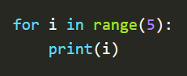
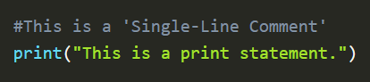
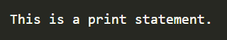
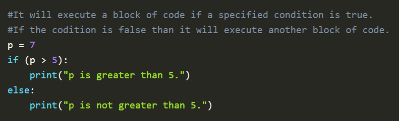
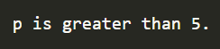

SYNTAX & COMMENTS
What is Syntax?
In simplest words, Syntax is the arrangement of words and phrases to create well-formed sentences in a language. In the case of a computer language, syntax is the structural arrangement of comments, variables, numbers, operators, statements, loops, functions, classes, objects, etc. which helps us understand the meaning or semantics of a computer language.
E.g. a ‘comment’ is used to explain the functioning of a block of code. It starts with a ‘#’.
More on comments in the comments chapter.
E.g. a block of code is identified by an ‘indentation’.

What is Comments?
A comment is a part of the coding file that the programmer does not want to execute, rather the programmer uses it to either explain a block of code or to avoid the execution of a specific part of code while testing.
Single-Line Comments:
To write a comment just add a ‘#’ at the start of the line.
Example :

Output :

Multi-Line Comments:
To write multi-line comments you can use ‘#’ at each line or you can use the multiline string.
Example : The use of ‘#’.

Output :
